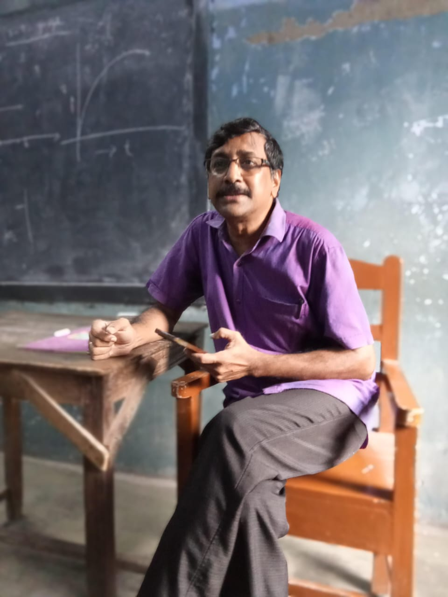

Koushik Pramanik — the living embodiment of calm in the wild chaos of Gangapuri Siksha Sadan. In a school where noise levels rival a railway station, he somehow moves like a quiet breeze, untouched by the madness.
No one has ever heard him talk loudly to a student, and if he ever did, the shock would probably make the headlines.
He’s so kind-hearted that he tolerates every shade of student mischief — from casual back-bench gossip to full-scale classroom revolutions. While other teachers would be chasing you with a stick, Koushik Sir would just smile, shake his head, and let you carry on, as if silently betting on how far your nonsense will go.
Anyone who meets him once will remember him for life, not because he’s strict or scary, but because he’s living proof that patience can be a superpower. Even when chaos erupts around him, he stays unshaken — like a monk who somehow ended up teaching in a school instead of meditating in the Himalayas.
And of course, there’s his signature dialogue: “Kochu hoyeche.” No matter the situation — exam stress, noisy class, or total disaster — those two words come out like a mantra. Over time, it’s earned him the affectionate nickname “Kochu Sir,” a title we use with equal parts love and playful teasing.
